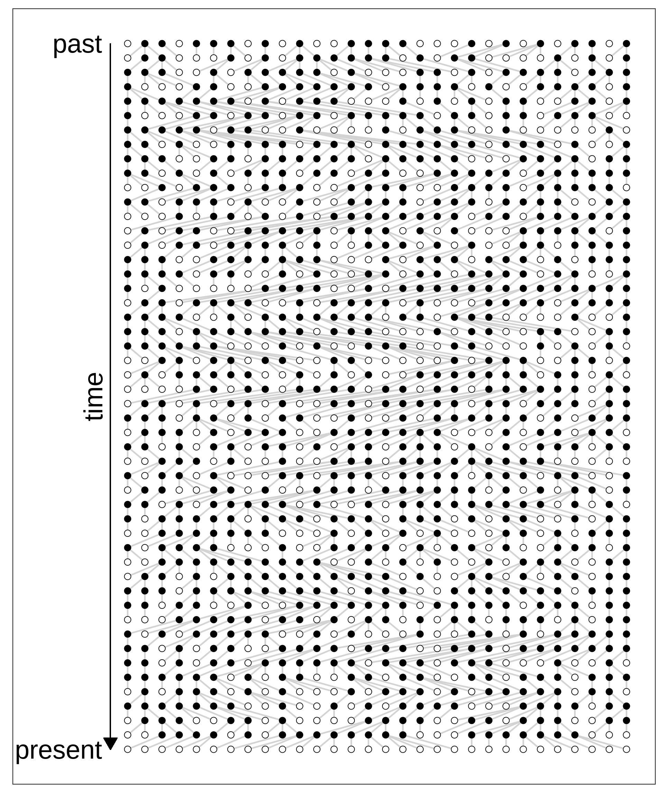
Simulation
Primer on the coalescent and forward simulation
Per Unneberg
NBIS
24-Aug-2023
The Wright-Fisher model and simulations
Recap
Model of a population describing genealogies under the following assumptions
- discrete and non-overlapping generations
- haploid individuals or two subpopulations (males and females)
- constant population size
- all individuals are equally fit
- population has no geographical or social structure
- no recombination
Forward simulation
::::
The Wright-Fisher model and simulations
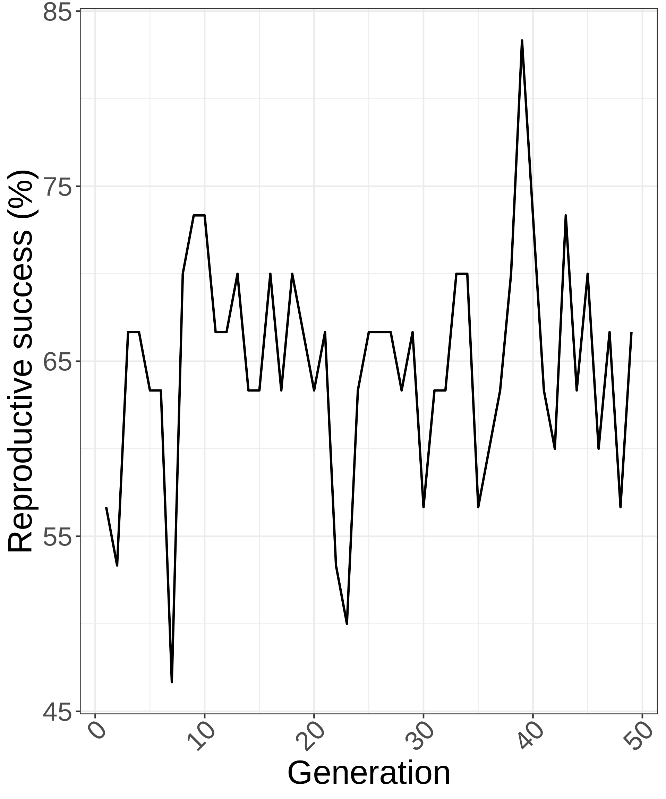
Mean reproductive success = 63.4%. Can show for large populations P(no descendants)=\(1 - e^{-1} \approx 0.632\)
::::
Forward and backward simulation
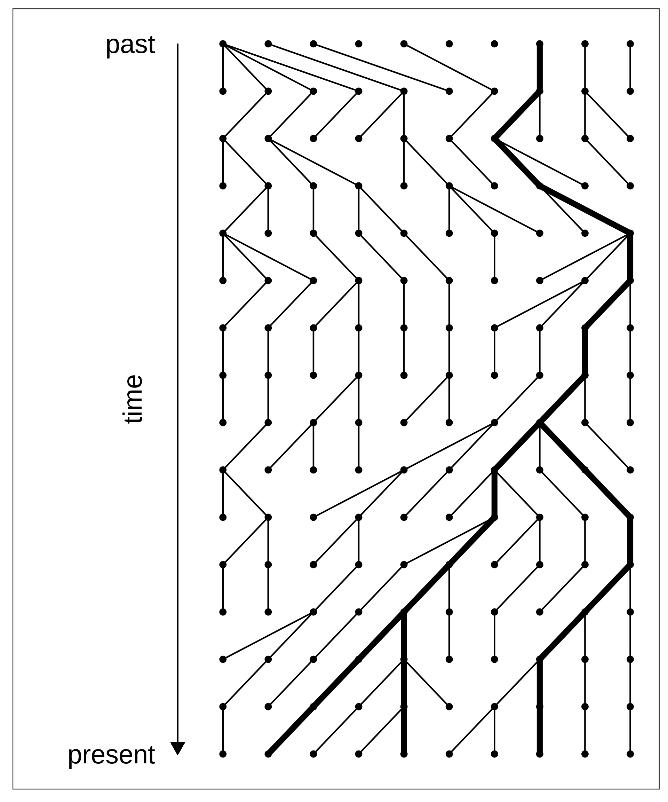
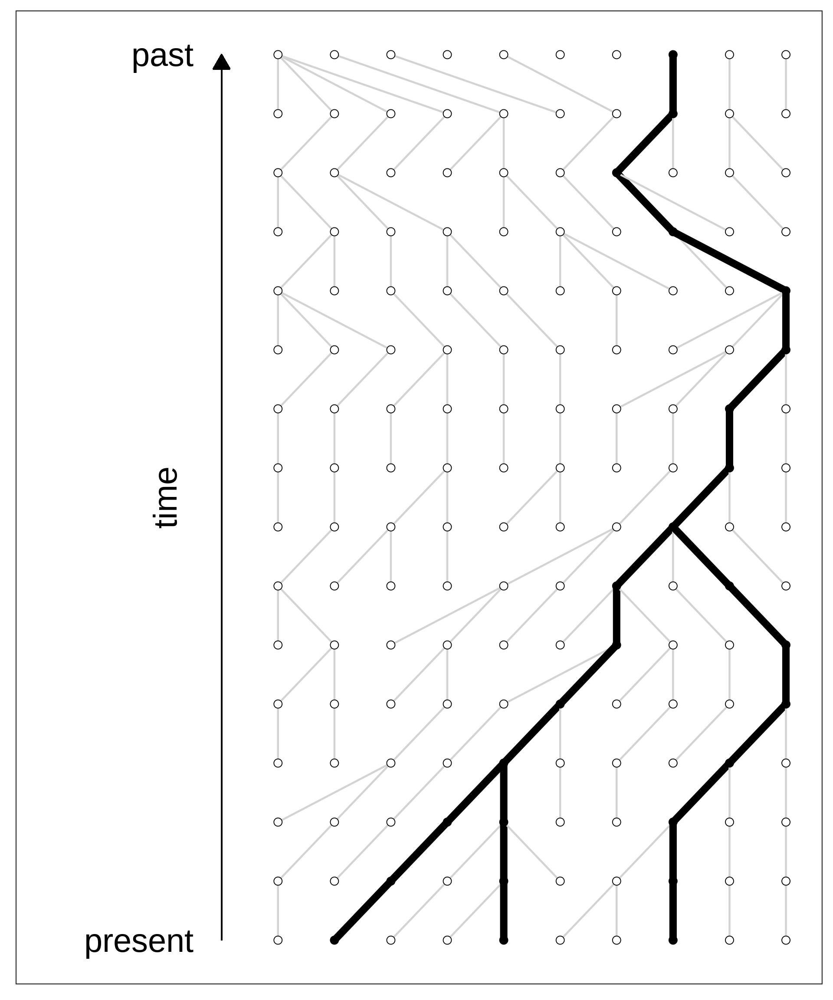
Simulated nodes are filled with black. Genealogy of interest is highlighted in thick black lines.
Why do we want simulations anyway
- No analytical solutions for linked selection and the like \(\rightarrow\) must use simulations
- Use to gain understanding and improve interpretation of mutational processes
- Generate neutral null distributions to compare with observed data
- Generate training data for machine learning
The coalescent
Coalescent simulations
The coalescent simulates the genealogy of a sample of individuals on which mutations are “sprinkled” according to a Poisson process.
- Simulate ancestry (genealogy)
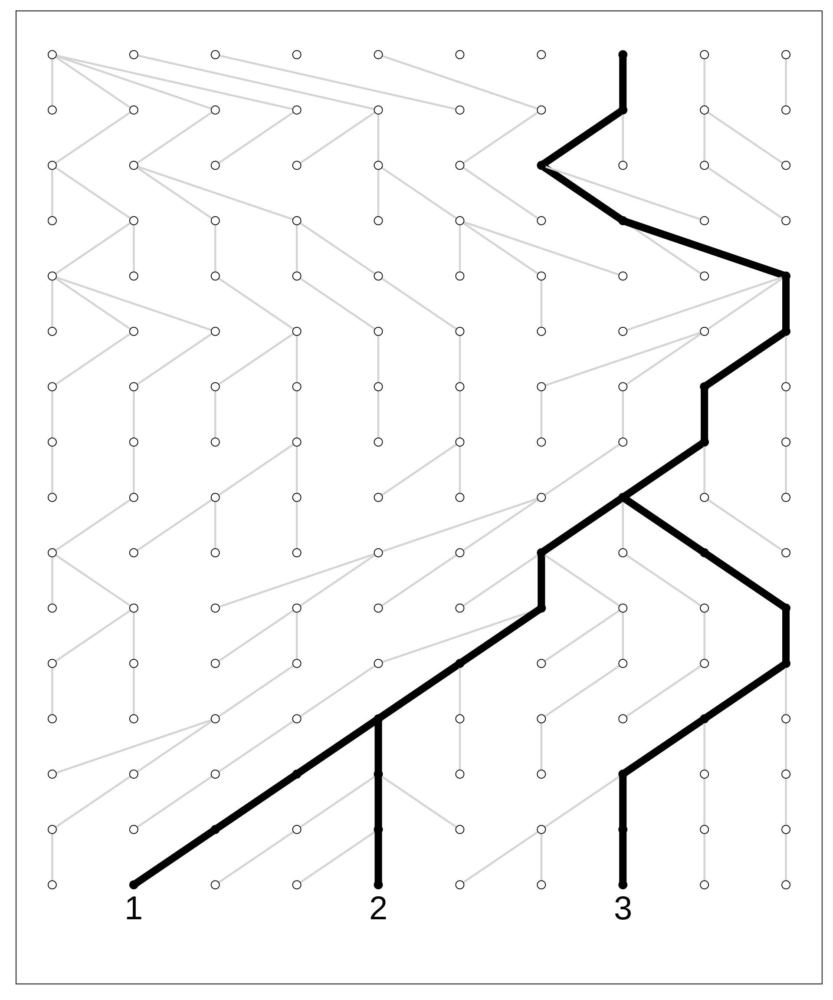
Coalescent simulations
The coalescent simulates the genealogy of a sample of individuals on which mutations are “sprinkled” according to a Poisson process.
- Simulate ancestry (genealogy)
- Simulate mutations
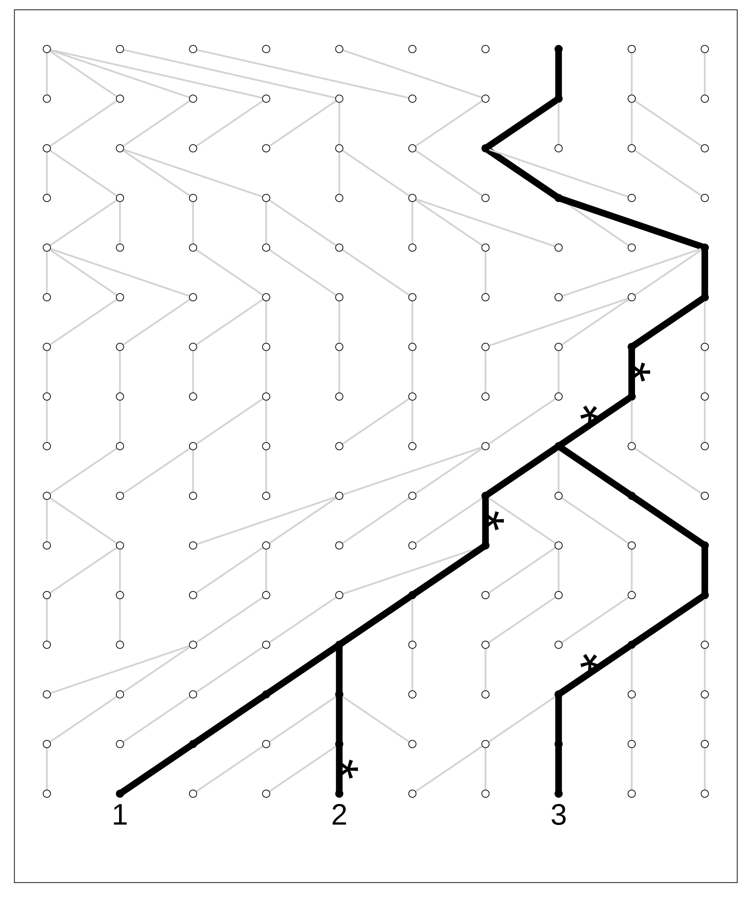
Coalescent simulations
The coalescent simulates the genealogy of a sample of individuals on which mutations are “sprinkled” according to a Poisson process.
- Simulate ancestry (genealogy)
- Simulate mutations
Question: how many mutations are common to all samples? How many mutations does sample 1 have? Sample 2?
Assuming the ancestral state is denoted 0 (prior to the first generation) and the derived state 1, what are the sequences of the samples?
Simulating genealogies (Hahn, 2019, p. 115)
- Start with \(i=n\) chromosomes
Simulating genealogies (Hahn, 2019, p. 115)
Start with \(i=n\) chromosomes
Choose time to next coalescent event from an exponential distribution with parameter \(\lambda=i(i-1)/2\)
Simulating genealogies (Hahn, 2019, p. 115)
Start with \(i=n\) chromosomes
Choose time to next coalescent event from an exponential distribution with parameter \(\lambda=i(i-1)/2\)
Choose two chromosomes at random to coalesce
Simulating genealogies (Hahn, 2019, p. 115)
Start with \(i=n\) chromosomes
Choose time to next coalescent event from an exponential distribution with parameter \(\lambda=i(i-1)/2\)
Choose two chromosomes at random to coalesce
Merge the two lineages and set \(i \rightarrow i - 1\)
Simulating genealogies (Hahn, 2019, p. 115)
- Start with \(i=n\) chromosomes
- Choose time to next coalescent event from an exponential distribution with parameter \(\lambda=i(i-1)/2\)
- Choose two chromosomes at random to coalesce
- Merge the two lineages and set \(i \rightarrow i - 1\)
- If \(i>1\), go to step 2; if not, stop.
Simulating genealogies (Hahn, 2019, p. 115)
- Start with \(i=n\) chromosomes
- Choose time to next coalescent event from an exponential distribution with parameter \(\lambda=i(i-1)/2\)
- Choose two chromosomes at random to coalesce
- Merge the two lineages and set \(i \rightarrow i - 1\)
- If \(i>1\), go to step 2; if not, stop.
Simulating genealogies (Hahn, 2019, p. 115)
- Start with \(i=n\) chromosomes
- Choose time to next coalescent event from an exponential distribution with parameter \(\lambda=i(i-1)/2\)
- Choose two chromosomes at random to coalesce
- Merge the two lineages and set \(i \rightarrow i - 1\)
- If \(i>1\), go to step 2; if not, stop.
Simulating genealogies (Hahn, 2019, p. 115)
- Start with \(i=n\) chromosomes
- Choose time to next coalescent event from an exponential distribution with parameter \(\lambda=i(i-1)/2\)
- Choose two chromosomes at random to coalesce
- Merge the two lineages and set \(i \rightarrow i - 1\)
- If \(i>1\), go to step 2; if not, stop.
Simulating genealogies (Hahn, 2019, p. 115)
- Start with \(i=n\) chromosomes
- Choose time to next coalescent event from an exponential distribution with parameter \(\lambda=i(i-1)/2\)
- Choose two chromosomes at random to coalesce
- Merge the two lineages and set \(i \rightarrow i - 1\)
- If \(i>1\), go to step 2; if not, stop.
Simulating genealogies (Hahn, 2019, p. 115)
- Start with \(i=n\) chromosomes
- Choose time to next coalescent event from an exponential distribution with parameter \(\lambda=i(i-1)/2\)
- Choose two chromosomes at random to coalesce
- Merge the two lineages and set \(i \rightarrow i - 1\)
- If \(i>1\), go to step 2; if not, stop.
Simulating genealogies (Hahn, 2019, p. 115)
- Start with \(i=n\) chromosomes
- Choose time to next coalescent event from an exponential distribution with parameter \(\lambda=i(i-1)/2\)\(^1\)
- Choose two chromosomes at random to coalesce
- Merge the two lineages and set \(i \rightarrow i - 1\)
- If \(i>1\), go to step 2; if not, stop.
\(^1\): The exponential can be parametrized in two different ways, so that the parameter to the function is either \(\lambda\) or \(\beta=1/\lambda\).
Simulating genealogies (Hahn, 2019, p. 115)
- Start with \(i=n\) chromosomes
- Choose time to next coalescent event from an exponential distribution with parameter \(\lambda=i(i-1)/2\)\(^1\)
- Choose two chromosomes at random to coalesce
- Merge the two lineages and set \(i \rightarrow i - 1\)
- If \(i>1\), go to step 2; if not, stop.
\(^1\): The exponential can be parametrized in two different ways, so that the parameter to the function is either \(\lambda\) or \(\beta=1/\lambda\).
Some properties of the tree
Expected waiting time to coalesce when \(i\) lineages: \(E(T_i) = \frac{2}{i(i-1)}\)
Branch lengths can be derived from waiting times. For instance, \(\tau_1=\tau_2=T_5+T_4\) and \(\tau_4=\tau_5=T_5\)
Time to the most recent common ancestor (MRCA): \(T_{MRCA} = \sum_{i=2}^n T_i\)
with expected value \(E(T_{MRCA}) = \sum_{i=2}^nE(T_i) = 2\left(1 - \frac{1}{n}\right)\)
The expected total tree height is \(E(T_{total}) = \sum_{i=2}^n iE(T_i) = 2\sum_{i=2}^n\frac{1}{i-1}\)
Variation in topology and height
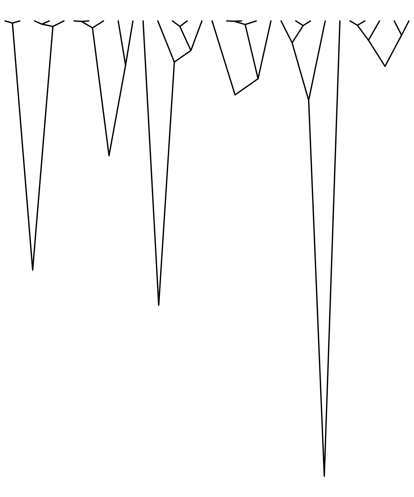
Diminishing returns of adding more samples
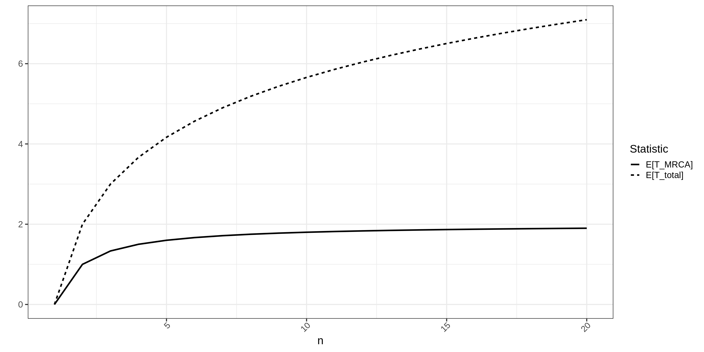Adding mutations
The coalescent and diversity
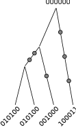
Many statistical quantities can be related to the site frequency spectrum (SFS), which is a summary of the frequencies of the segregating sites. Let \(\xi_i\) be the number of chromosomes in the sample with \(i\) minor alleles. In the figure we have 6 mutations on \(n=4\) chromosomes.
| Name | Count | |
|---|---|---|
| \(\xi_1\) | singleton | 4 |
| \(\xi_2\) | doubleton | 2 |
| \(\xi_3\) | 0 |
Note that the number of segregating sites is \(S=\sum_{i=1}^{n-1}\xi_i\)
In this notation one can show that \(\pi\), the nucleotide diversity, is
\[ \pi = \frac{\sum_{i=1}^{n-1}i(n-i)\xi_i}{n(n-1)/2} \]
Exercise
Calculate the nucleotide diversity and compare the results from the foundation lecture
\[ \pi = \frac{1(4-1)\xi_1 + 2(4-2)\xi_2 + 3(4-3)\xi_3}{4(4-1)/2} = \frac{1}{6}\left(12 + 8 + 0\right) = 3\frac{1}{3} \]
The impact of topology on the SFS
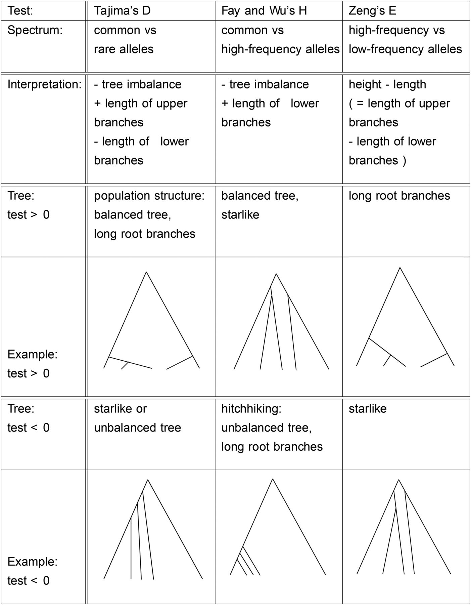
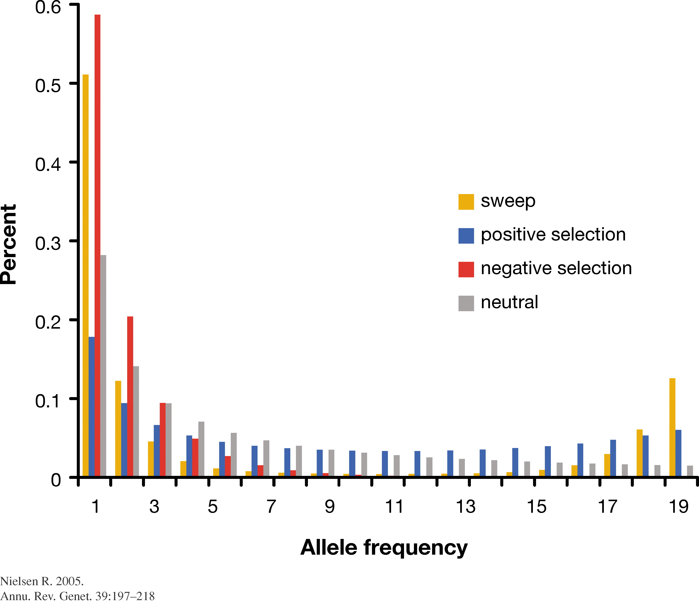
Many tests for selection are based on the SFS which in turn is influenced by the topology of the tree.
Exercise on the coalescent
The coalescent with recombination
On non-recombining chromosomes and assortment
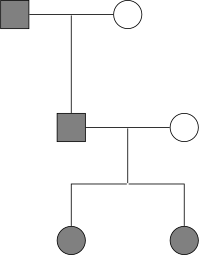
Both siblings inherit chromosome from paternal grandfather
Chromosomes coalesce at father
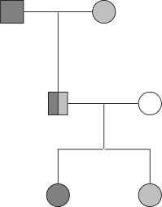
Siblings inherit different grandparental chromosomes \(\Rightarrow\) chromosomes coalesce God knows when in the past
Genealogies differ
The ancestral recombination graph

Properties:
- marginal trees constitute a sequence of trees (tree sequence) along a chromosome
- each tree represents the genealogy of a non-recombining part of the chromosome
- neighbouring trees are correlated
Interpretation: chromosomes are mosaics of non-recombining units
msprime stores variation data as tree sequences
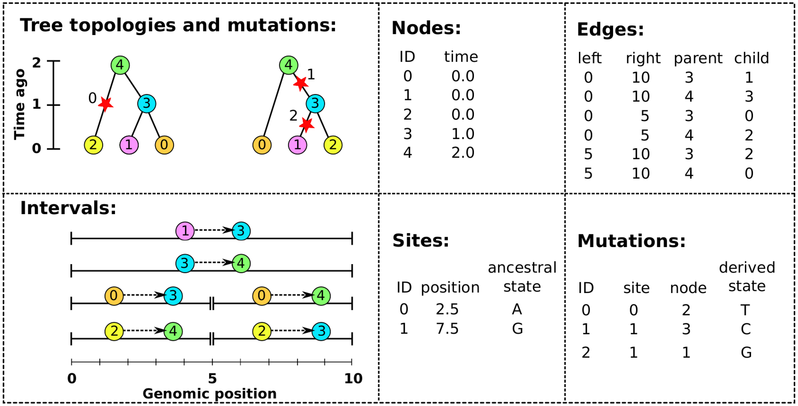
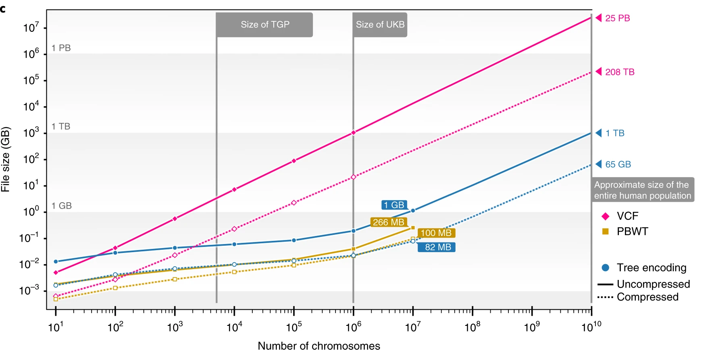
Simulating ancestry with msprime
From msprime quickstart
import msprime
# Simulate an ancestral history for 3 diploid samples under the coalescent
# with recombination on a 5kb region with human-like parameters.
ts = msprime.sim_ancestry(
samples=3,
recombination_rate=1e-8,
sequence_length=5_000,
population_size=10_000,
random_seed=123456)
ts.draw_svg()Simulating mutations with msprime
import msprime
ts = msprime.sim_ancestry(
samples=3,
recombination_rate=1e-8,
sequence_length=5_000,
population_size=10_000,
random_seed=123456)
mutated_ts = msprime.sim_mutations(ts, rate=1e-8, random_seed=54321)
mutated_ts.draw_svg()msprime exercise
Bibliography
Ferretti, L., Ledda, A., Wiehe, T., Achaz, G., & Ramos-Onsins, S. E. (2017). Decomposing the Site Frequency Spectrum: The Impact of Tree Topology on Neutrality Tests. Genetics, 207(1), 229–240. https://doi.org/10.1534/genetics.116.188763
Hahn, M. (2019). Molecular Population Genetics (First). Oxford University Press.
Hein, J., Schierup, M. H., & Wiuf, C. (2005). Gene genealogies, variation and evolution: A primer in coalescent theory. Oxford University Press. https://books.google.se/books?id=CCmLNAEACAAJ
Hubisz, M., & Siepel, A. (2020). Inference of Ancestral Recombination Graphs Using ARGweaver. In J. Y. Dutheil (Ed.), Statistical Population Genomics (pp. 231–266). Springer US. https://doi.org/10.1007/978-1-0716-0199-0_10
Kelleher, J., Thornton, K. R., Ashander, J., & Ralph, P. L. (2018). Efficient pedigree recording for fast population genetics simulation. PLOS Computational Biology, 14(11), e1006581. https://doi.org/10.1371/journal.pcbi.1006581
Kelleher, J., Wong, Y., Wohns, A. W., Fadil, C., Albers, P. K., & McVean, G. (2019). Inferring whole-genome histories in large population datasets. Nature Genetics, 51(9), 1330–1338. https://doi.org/10.1038/s41588-019-0483-y
Simulation primer